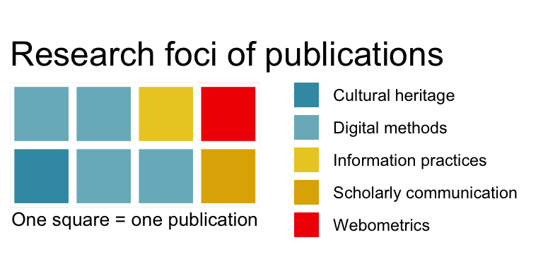

Ekström, B. (2017). Vart är open access-rörelsen på väg? Fyra tendenser i svenska och brittiska open access-nätverk. Tidskrift för ABM, 2(2), 5–35. http://urn.kb.se/resolve?urn=urn:nbn:se:uu:diva-336644
Ekström, B. (2017). Publiceringsvariationer: En jämförelse mellan DigitaltMuseum och UbuWeb. Tidskrift för ABM, 2(1), 4–14. http://urn.kb.se/resolve?urn=urn:nbn:se:uu:diva-317148
Pennlert, J., Ekström, B., & Lorentzen, D. G. (2021). Teleoptical Perspectives on Digital Methods: Scientific Claims and Consequences. In S. Petersson (Ed.), Digital Human Sciences. Stockholm University Press. https://doi.org/10.16993/bbk.d
Ekström, B. (2019). Developing a rule-based method for identifying researchers on Twitter: The case of vaccine discussions. 17th International Conference on Scientometrics and Informetrics, ISSI 2019 - Proceedings Volume 2, Rome, Italy, August 2019, (pp. 2618 - 2619).
Gunnarsson Lorenzen, D., Eklund, J., Nelhans, G., & Ekström, B. (2019). On the potential for detecting scientific issues and controversies on Twitter: A method for investigation conversations mentioning research. 17th International Conference on Scientometrics and Informetrics, ISSI 2019 - Proceedings Volume 2, Rome, Italy, August 2019. (pp. 2189 - 2198).
Ekström, B. (2017). The Illicit Information Community: Information—Practical Reflections on the Shadow Library AAARG. In P. Arvola, T. Hintsanen, S. Kari, S. Kolehma, S. Luolin, & J. Sillanpää (Eds.), Improving Quality of Life Through Information: Proceedings of the XXV Bobcatsss Symposium, Tampere, Finland, January 2017 (pp. 121–125). http://tampub.uta.fi/handle/10024/101894
Barry, B. (2014). Music in Text. Bläck Charm Nostalgi Vassa Tänder.
Ekström, B. (2019). Developing a rule-based method for identifying researchers on Twitter: The case of vaccine discussions. Digital Humanities at Oxford Summer School, University of Oxford, Oxford, United Kingdom.
Ekström, B., Tattersall Wallin, E., & Marčetić, H. (2020). Programming Historian: Novice-friendly tutorials on digital methods. Tidskrift För ABM, 5(1), 71–75. https://www.diva-portal.org/smash/record.jsf?pid=diva2:1508542
